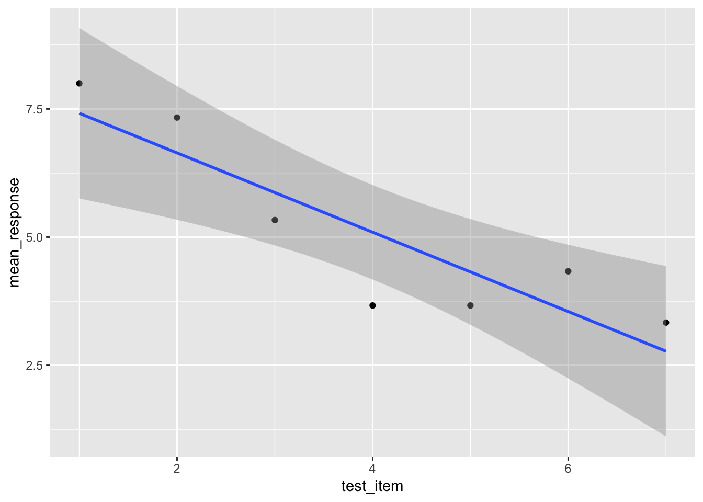

Yet another exercise in fixing broken code, but this time using the frames data!
library(tidyverse)
library(here)
library(skimr)
frames <- here("analysis", "data", "frames_ex2.csv") %>% read_csv()Print and skim the data. Notice that there are a lot of rows, because every row is a single judgment!
frames## # A tibble: 4,725 x 8
## id gender age condition sample_size n_obs test_item response
## <int> <chr> <int> <chr> <chr> <int> <int> <int>
## 1 1 male 36 category small 2 1 8
## 2 1 male 36 category small 2 2 7
## 3 1 male 36 category small 2 3 6
## 4 1 male 36 category small 2 4 6
## 5 1 male 36 category small 2 5 5
## 6 1 male 36 category small 2 6 6
## 7 1 male 36 category small 2 7 3
## 8 1 male 36 category medium 6 1 9
## 9 1 male 36 category medium 6 2 7
## 10 1 male 36 category medium 6 3 5
## # ... with 4,715 more rowsskim(frames)## Skim summary statistics
## n obs: 4725
## n variables: 8
##
## -- Variable type:character -----------------------------------------------------
## variable missing complete n min max empty n_unique
## condition 0 4725 4725 8 8 0 2
## gender 0 4725 4725 4 6 0 2
## sample_size 0 4725 4725 5 6 0 3
##
## -- Variable type:integer -------------------------------------------------------
## variable missing complete n mean sd p0 p25 p50 p75 p100 hist
## age 0 4725 4725 34.92 11.63 20 27 32 40 84 <U+2587><U+2587><U+2583><U+2582><U+2581><U+2581><U+2581><U+2581>
## id 0 4725 4725 113 64.96 1 57 113 169 225 <U+2587><U+2587><U+2587><U+2587><U+2587><U+2587><U+2587><U+2587>
## n_obs 0 4725 4725 6.67 4.11 2 2 6 12 12 <U+2587><U+2581><U+2581><U+2587><U+2581><U+2581><U+2581><U+2587>
## response 0 4725 4725 4.9 3.04 0 2 5 8 9 <U+2586><U+2582><U+2582><U+2583><U+2582><U+2582><U+2583><U+2587>
## test_item 0 4725 4725 4 2 1 2 4 6 7 <U+2587><U+2587><U+2587><U+2587><U+2581><U+2587><U+2587><U+2587>Use filter to extract the data from person with id of 12.
one_person <- frames %>%
filter(id == 12)Inspect their raw data:
one_person## # A tibble: 21 x 8
## id gender age condition sample_size n_obs test_item response
## <int> <chr> <int> <chr> <chr> <int> <int> <int>
## 1 12 female 30 property small 2 1 9
## 2 12 female 30 property small 2 2 9
## 3 12 female 30 property small 2 3 8
## 4 12 female 30 property small 2 4 9
## 5 12 female 30 property small 2 5 9
## 6 12 female 30 property small 2 6 9
## 7 12 female 30 property small 2 7 9
## 8 12 female 30 property medium 6 1 7
## 9 12 female 30 property medium 6 2 6
## 10 12 female 30 property medium 6 3 6
## # ... with 11 more rowsNext let’s look at their average “response” across each of the 7 test items (i.e., group by test item and compute the mean response for each item.
generalisation <- one_person %>%
group_by(test_item) %>%
summarise(mean_response = mean(response))Finally, as a reward, a picture! This code shold start working once the chunks above work
generalisation %>%
ggplot(aes(x = test_item, y = mean_response)) +
geom_point() +
geom_smooth(method = lm)